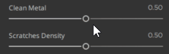
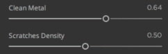

There is an option to animate one to several sliders. Press Ctrl when you hover a slider, a play icon will appear to launch the animation.
You can pause the animation by pressing Ctrl when you hover an animated slider, a pause icon will appear to stop the animation of this slider.
If you want pause all the sliders, press P. To relaunch, press P again.
